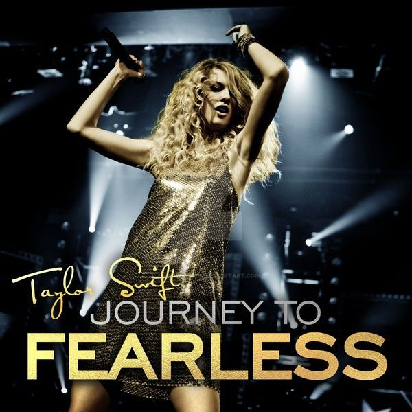
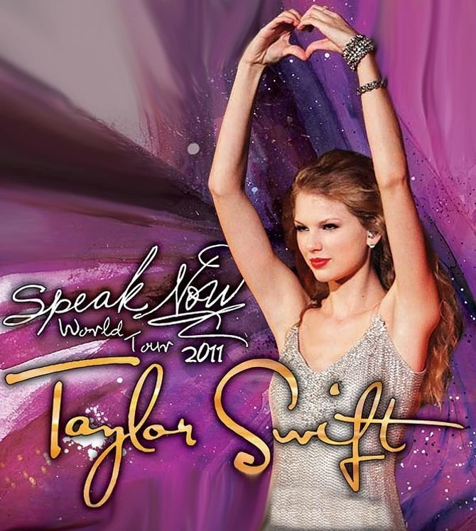
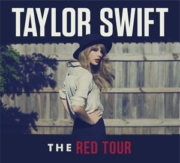
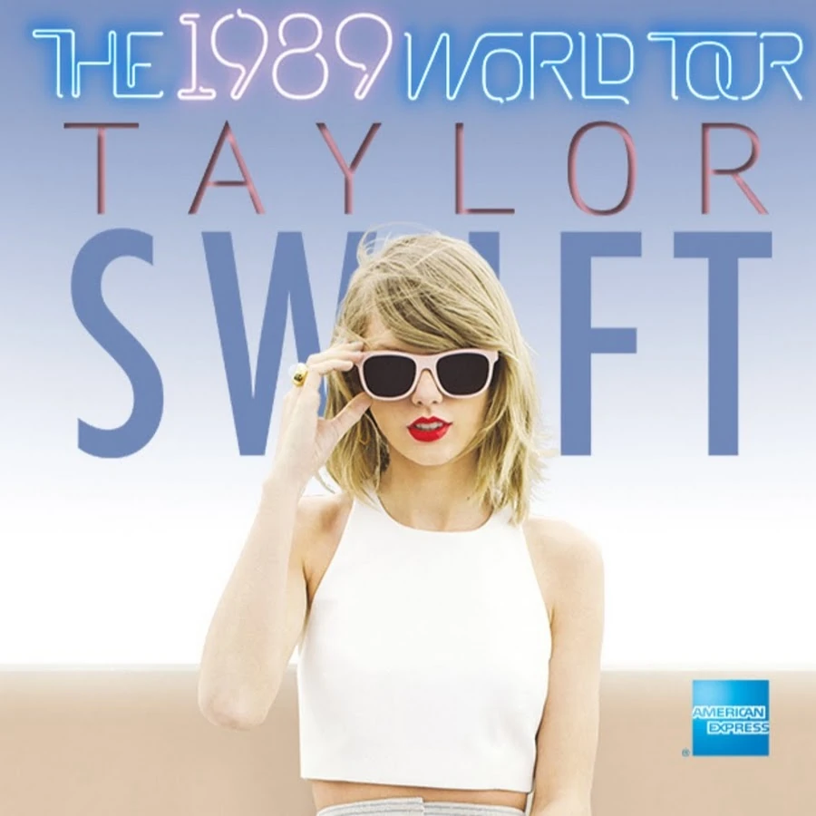

Conciertos
FEARLESS TOUR
Comenzó en abril de 2009 y se extendió hasta junio de 2010. Fue su primera gira como artista principal y recorrió América del Norte, Europa, Asia y Oceanía. Con más de 100 conciertos, la gira promocionó su álbum Fearless. Taylor ofreció un espectáculo lleno de energía y creatividad, destacando su habilidad como cantante y compositora.
SPEAK NOW WORLD TOUR
Inició en febrero de 2011 y finalizó en marzo de 2012. Esta gira mundial, que promocionaba su álbum Speak Now, visitó América del Norte, Europa, Asia y Oceanía, con un total de 110 espectáculos. Taylor incorporó elementos teatrales en sus presentaciones, destacando el carácter narrativo de sus canciones.
RED TOUR
La gira promocionando el álbum Red empezó en marzo de 2013 y terminó en junio de 2014. Se presentó principalmente en estadios de América del Norte, Europa y Oceanía. Taylor ofreció un espectáculo visualmente impresionante, lleno de luces, colores vibrantes y elaboradas coreografías que reflejaban el sonido más pop de su álbum.
1989 WORLD TOUR
Esta gira comenzó en mayo de 2015 y terminó en diciembre del mismo año. Fue la primera gira que realizó completamente en estadios, visitando América del Norte, Europa, Asia y Oceanía. En cada show, Taylor incluyó colaboraciones con otros artistas, haciendo de cada concierto una experiencia única. El espectáculo estaba lleno de elementos pop, coreografías y efectos visuales innovadores.
REPUTATION STADIUM TOUR

Comenzó en mayo de 2018 y terminó en noviembre del mismo año. Fue su gira más grande hasta la fecha, llenando estadios en América del Norte, Europa, Asia y Oceanía. La gira promocionó su álbum Reputation y fue un espectáculo altamente producido, con pantallas gigantes, pirotecnia y efectos especiales que resaltaban el tema oscuro y poderoso del álbum.
THE ERAS TOUR

Iniciada en marzo de 2023, esta gira celebra toda la carrera de Taylor, incluyendo todos sus álbumes. Con más de 100 fechas, principalmente en América del Norte y Europa, The Eras Tour es un recorrido nostálgico por sus diferentes eras musicales. Cada segmento del concierto está dedicado a uno de sus álbumes, con vestuario y escenografía acorde a cada era.